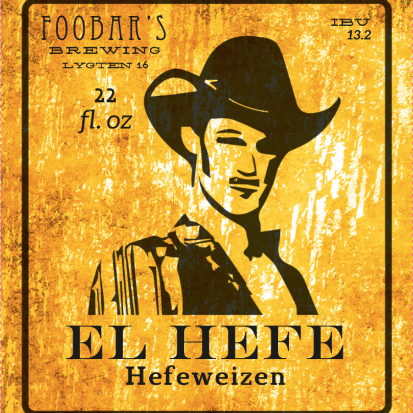
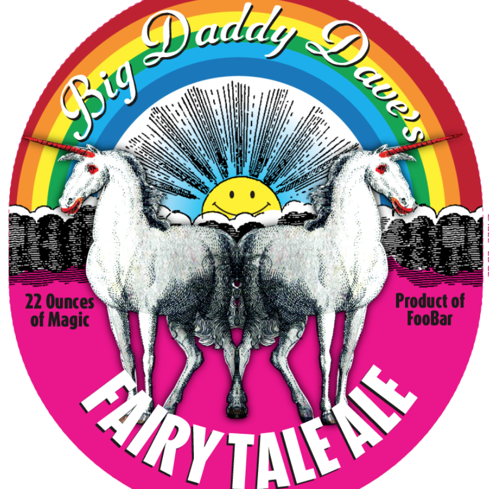
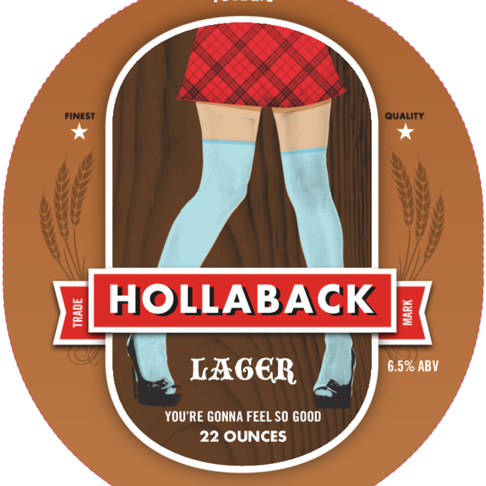
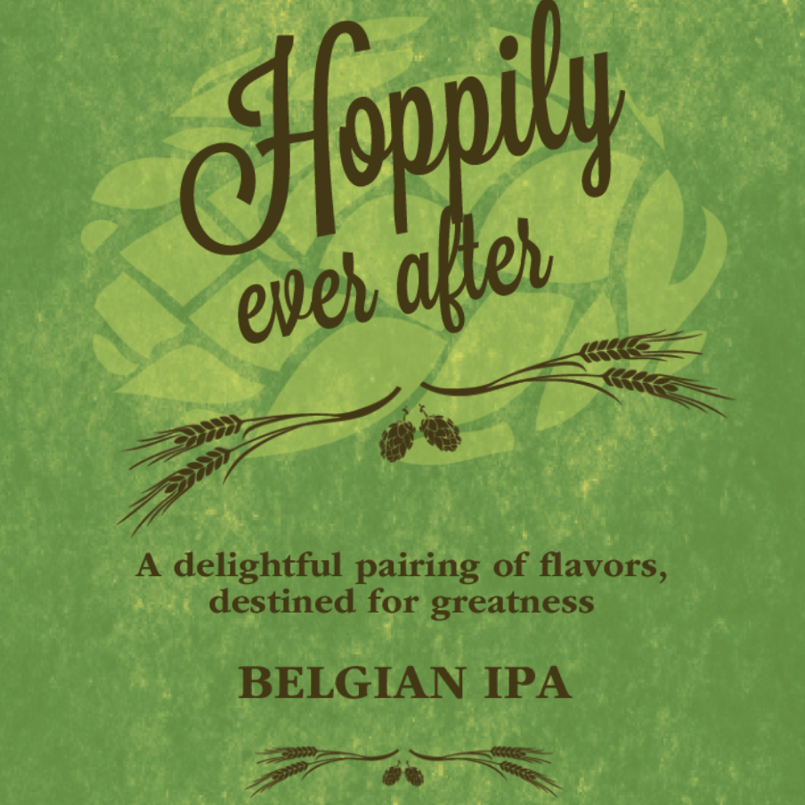
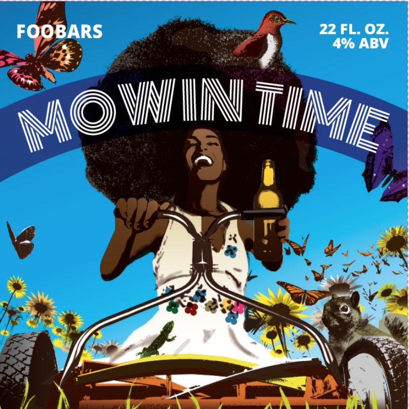
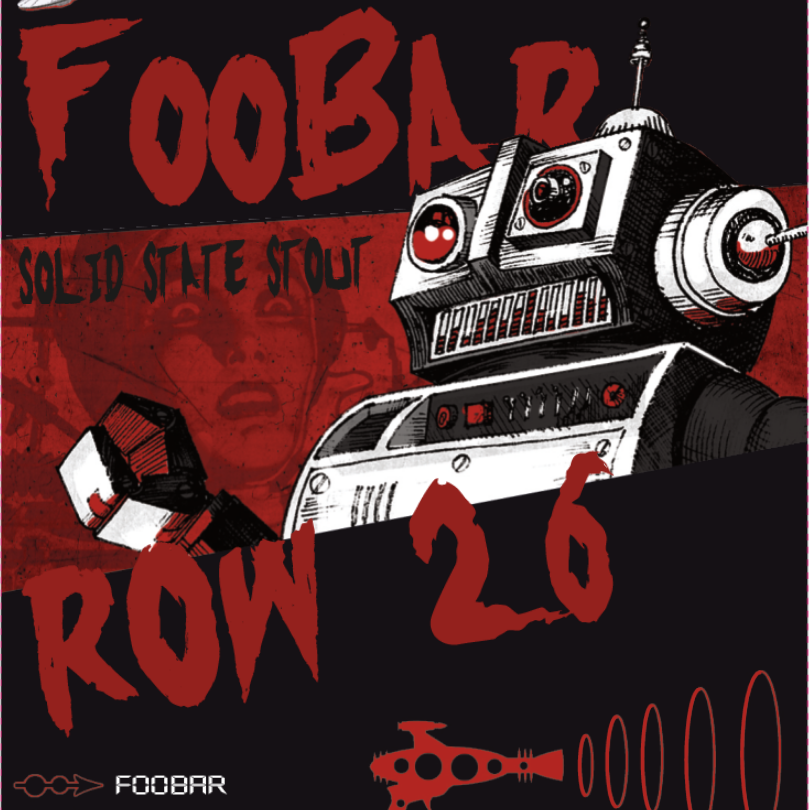
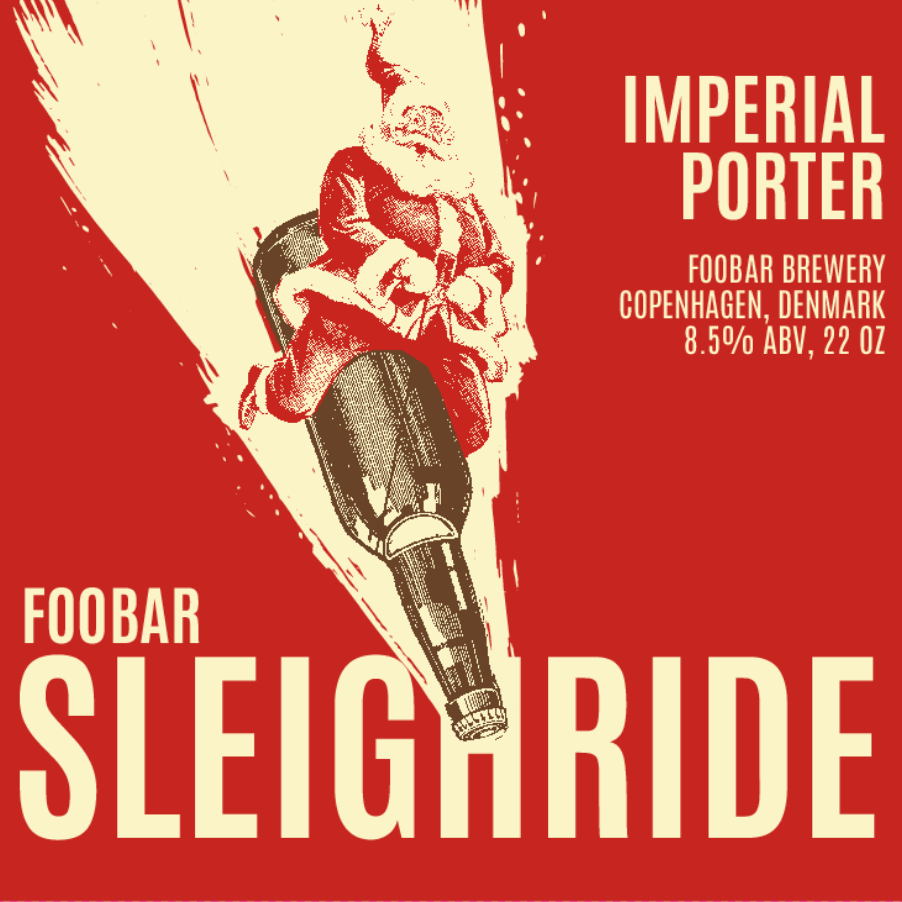
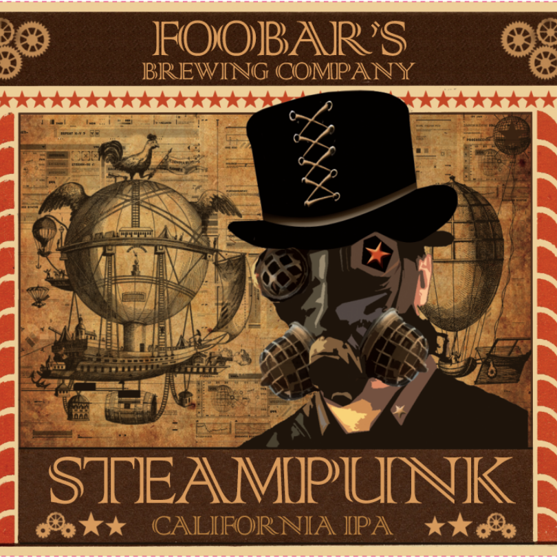

IPA, 8,7%
"A decidedly hoppy and bitter, moderately strong American pale ale."
Hefeweizen", 5,4%
"Refreshing wheat or rye beers that can display more hop character and less yeast character than their German cousins."
IPA, 7,9%
"A decidedly hoppy and bitter, moderately strong American pale ale."
Oktoberfest, 6,5%
"Smooth, clean, and rather rich, with a depth of malt character. This is one of the classic malty styles, with a maltiness that is often described as soft, complex, and elegant but never cloying."
IPA, 4,5%
"A decidedly hoppy and bitter, moderately strong American pale ale."
European Lager, 4%
"Smooth, clean, and rather rich, with a depth of malt character. This is one of the classic malty styles, with a maltiness that is often described as soft, complex, and elegant but never cloying."
Stout, 6,2%
"A hoppy, bitter, strongly roasted Foreign-style Stout (of the export variety)."
Belgian Specialty Ale, 10%
"Variable. This category encompasses a wide range of Belgian ales produced by truly artisanal brewers more concerned with creating unique products than in increasing sales."
Belgian Specialty Ale, 8,5%
"Variable. This category encompasses a wide range of Belgian ales produced by truly artisanal brewers more concerned with creating unique products than in increasing sales."
California Common, 5%
"A lightly fruity beer with firm, grainy maltiness, interesting toasty and caramel flavors, and showcasing the signature Northern Brewer varietal hop character."